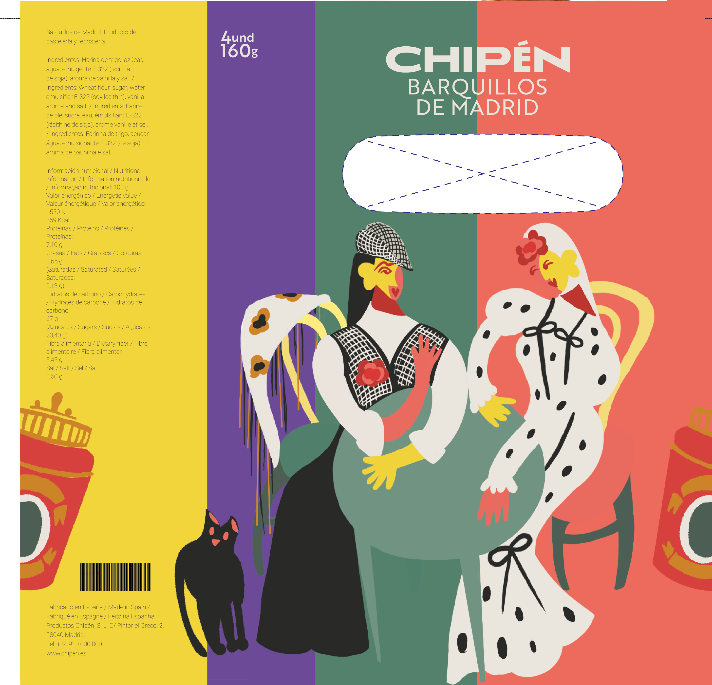
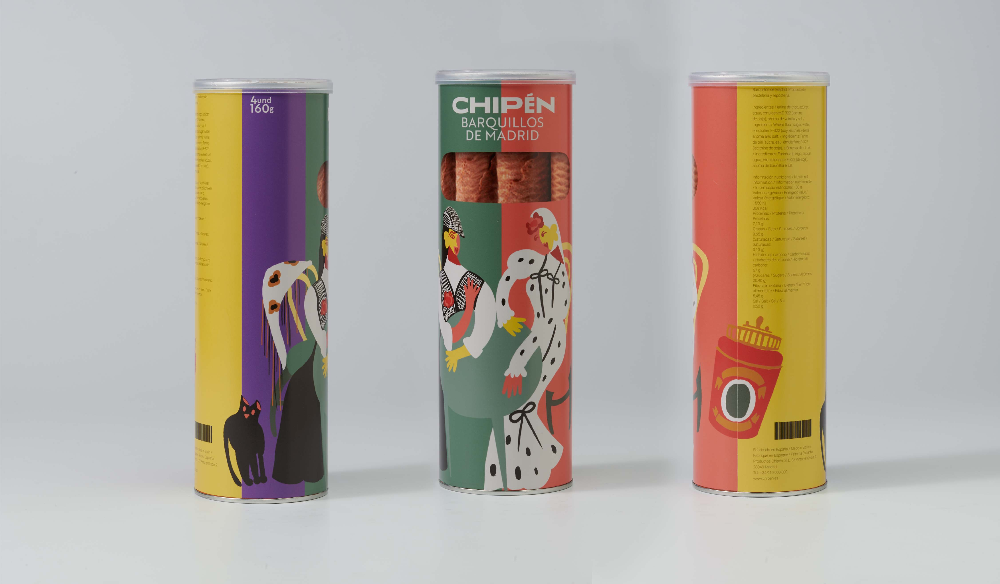

Chipén
packaging design
Project developed as part of the Design Degree at UCM.
Packaging design proposal for the brand Chipén, which specializes in barquillos, a traditional sweet from Madrid.
The illustration draws inspiration from the city’s rich cultural heritage and distinctive chulería, its characteristic swagger and charm. It captures the playful and festive spirit of classic Madrid, using the barquillera’s roulette wheel as a symbol of these vibrant values.
The proposed design seeks to revive that joyful tradition through a contemporary visual language.

